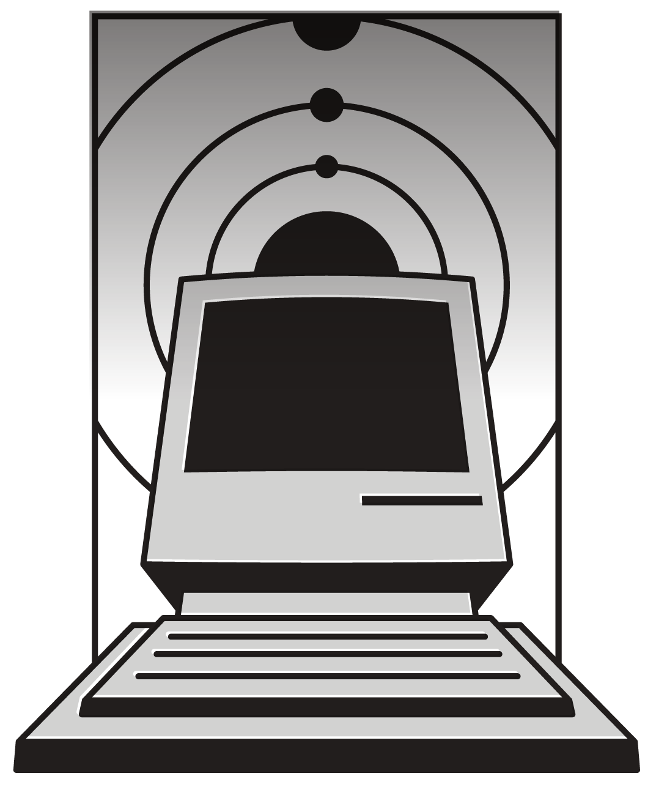
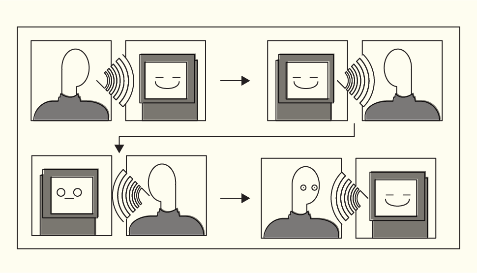
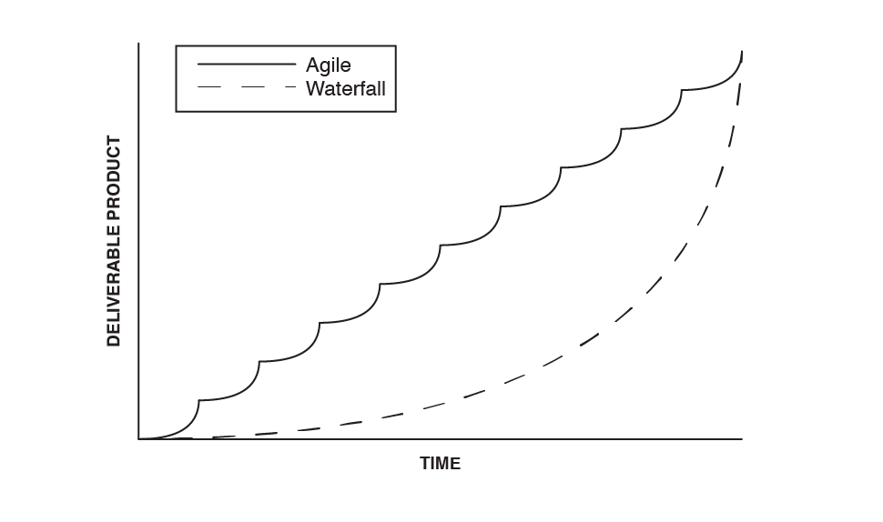
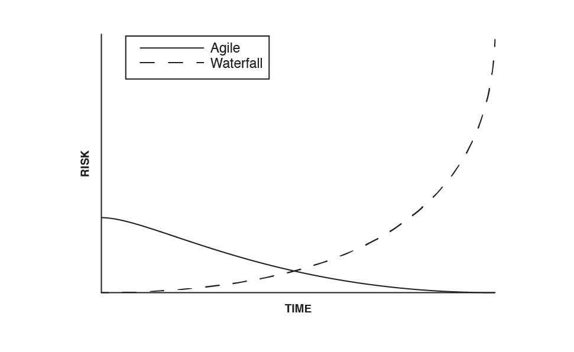
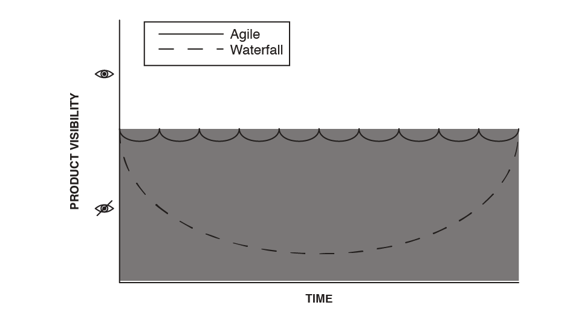
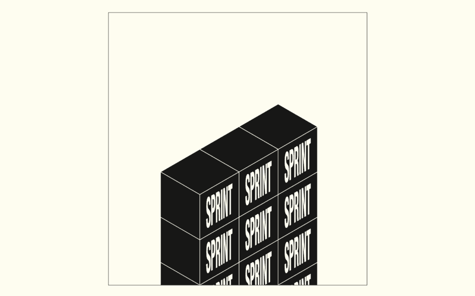
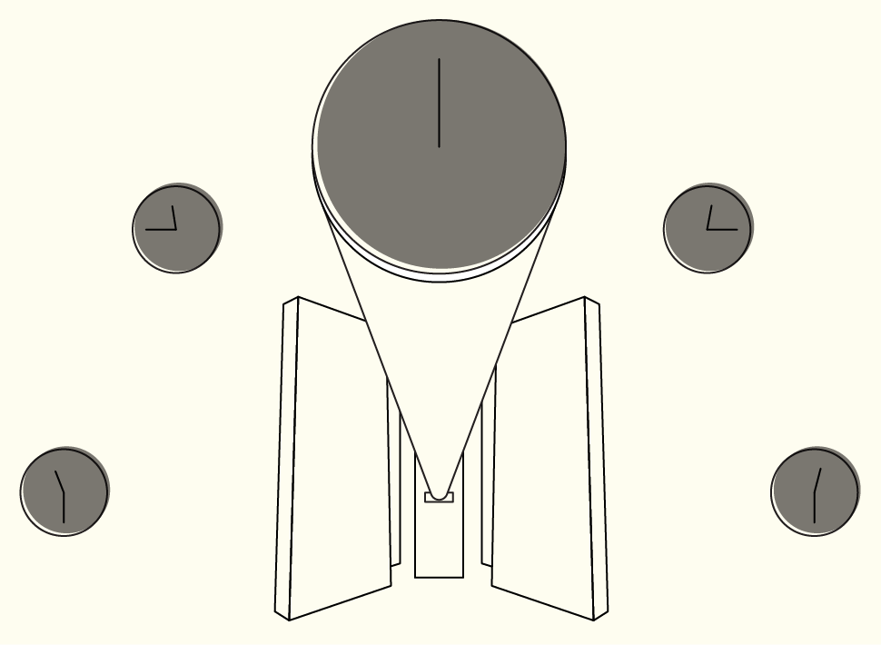
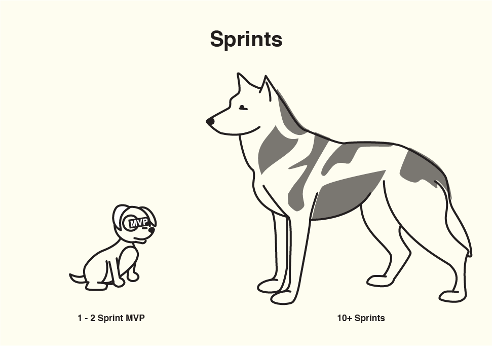
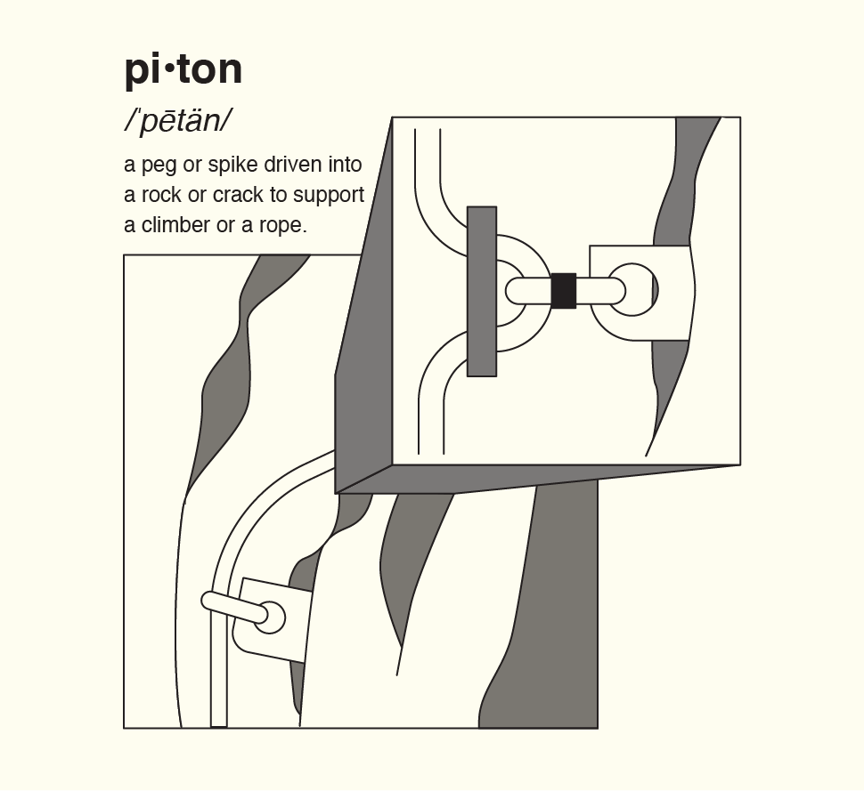
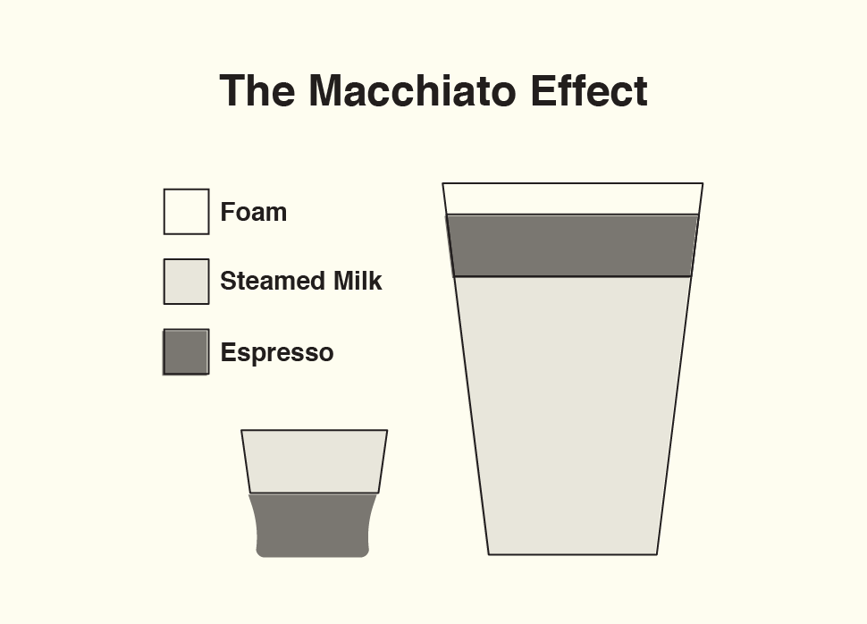

A helpful overview of our process and the way we solve problems.
section 2-1
Aligning Our Minds
This is how we do the work together. Understanding a little bit of our process goes a long way when it comes to staying on the same page. Here are some important concepts for you to wrap your head around.

section 2-2
Keeping In Touch
We believe transparency and open communication are key to working effectively and efficiently. Our team uses *Slack* to keep everyone on the same page. We keep all of our conversations there so nothing gets lost in the email shuffle.



section 2-3
Staying Agile
Our team strives to solve problems one step at a time through a process called Scrum. This method allows us to produce deliverables faster and freely make improvements throughout the life of a project. In order to ensure a tight feedback loop our team maintains daily internal check-ins called "stand-ups" that result in weekly progress updates to you.

section 2-4
Sprints vs Marathons
One central concept of Scrum is dividing the work into chunks of time called Sprints. The goal here is to produce deliverable results consistently thoughout a project so we always know what's done and what's left to do. Each Sprint begins with a predefined set of objectives and ends with a demo of the work accomplished.
As a wise man once observed, "The only way to eat a whale is one bite at a time."

section 2-5
What You Pay For
Our team calculates pricing for a project by the number of weeks we work on it, pretty simple. Once we've worked with you to define our objectives we consider your budget and project complexity to estimate the amount of time required to get the job done. Once a project is underway, we continue to plan and execute our objectives one Sprint at a time in order to allocate time and effort most efficiently.

section 2-6
Day 1 vs Year 1
If you're building an app you probably have a grand vision of the product you've been dreaming of. But you have to start somewhere. We'll help you define what your product will be and prepare it for what it could be. What we build first should be what brings the most immediate value to your audience.

section 2-7
Always Improving
When it comes to creating brands and building software it's tempting to ask, "When is it done?" But the thing to remember is that it's all about creating an experience for your audience. It's okay to release an idea into the world before it's perfect. Success comes from listening to your audience and making adjustments that provide the most value.

section 2-8
Meeting Expectations
Expectation - Communication = Frustration!
Our goal is to ensure we’re on the same page throughout our entire project together. We rely on communicated expectations in order to prioritize our work and create the best product for you. That's why we create a list of objectives, or Scope of Work, before every Sprint to make sure we make everything just the way you ordered it.
section 2-9
Tools of the Trade
Slack
Slack is a group communication tool used to organize project communication both internally and externally.
Asana
Asana is a task management tool used for group/project management.
DocuSign
Docusign is an online PDF-signing service that makes it easy to fill out all legal documents.
Dropbox
Dropbox is a cloud-based storage system for photos, .ai files, .psd files, and documents.
InVision
InVision is a tool used to create smooth UX experiences and high-fidelity wireframes or prototypes.